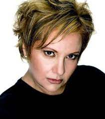
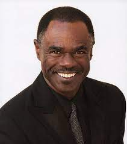
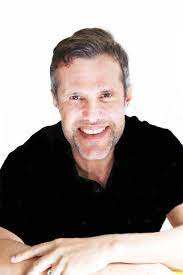
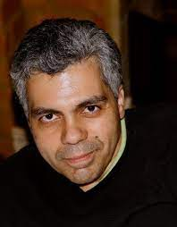
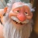
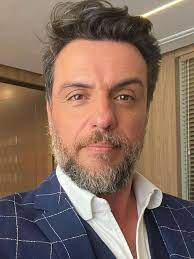

Enrolados - Dubladores
Dubladores
Luciano Grostein Huck (Luciano Huck)
dublou:José Bezerra / Flynn Rider

Idade: 51 anos
Nacionalidade: Brasileiro
Luciano Huck nasceu em São Paulo em 1971. Apresenta o programa Caldeirão do Huck, na Globo, nas tardes de sábado desde 2000. É casado com a apresentadora Angélica, pai de Joaquim, Benício e Eva.
Sylvia Salustiano Carvalho (Sylvia Salustt)
dublou:Rapunzel
Idade: 48 anos
Nacionalidade: Brasileira
Sylvia Salustiano Carvalho, mais conhecida como Sylvia Salustti (Niterói, 10 de dezembro de 1974) é uma atriz, dubladora e cantora brasileira. Sylvia iniciou a sua carreira em 1992. Estudou canto lírico na UFRJ, fez também teatro e depois começou a estagiar no já extinto estúdio carioca Herbert Richers.
Sandra Maria Braga Gottlieb (Gottshal)
dublou:Mãe Gothel
Idade: 53 anos
Nacionalidade: Brasileira
Cantora do estilo eurodance, teve seu primeiro sucesso tocado nas rádios em 1994. No One to Answer, que deu nome ao seu primeiro Álbum, lançado pela gravadora Spottligth Record, foi distribuído e bem aceito em cerca de 50 países. Foi a primeira cantora brasileira a gravar somente em Inglês músicas inéditas compostas por brasileiros e tendo seu 1o. Álbum totalmente gravado no Brasil. Break Out, seu segundo grande hit foi utilizado em quase todas as academias de ginástica do País, pelos som e ritmo contagiantes.
Carlos Alberto Gesteirao (Carlos Gesteira)
dublou:Capitão da Guarda
Idade: 71 anos
Nacionalidade: Brasileira
Carlos Gesteira nasceu em 12/06/1951, e começou a carreira como ator e dublador em 1996, com 45 anos. Gesteira dubla na maioria dos estudios principais do Rio, incluindo Delart, MG Estudios, Cinevideo, Audiocorp, VTI, Herbert Richards, TV Group, Som de Vera Cruz, Doublesound, e Alcateia.
José Renato Rabelo (Renato Rabelo)
dublou:Lovehorn
Idade: 57 anos
Nacionalidade: Brasileira
José Renato Rabelo (Campos dos Goytacazes, 14 de junho de 1970) é um ator, dublador, cantor e humorista brasileiro. Tem longa carreira televisiva em Globo e Record.
Mauro Ramos
dublou:Gancho
Idade: 62 anos
Nacionalidade: Brasileira
Mauro Ramos (Rio de Janeiro, 13 de fevereiro de 1961) é um ator, dublador, diretor de dublagem, locutor, redator, cantor e narrador brasileiro.Começou a carreira na dublagem no dia 15 de março de 1989, sendo indicado pela radioatriz Cordélia Santos a Mário Monjardim para testes e foi contratado com apenas um teste de voz e sem ter feito curso.
Manoel Garcia Júnior (Garcia Júnior)
dublou:Baixinho
Idade: 46 anos
Nacionalidade: Brasileira
Manoel Garcia Júnior (São Paulo, 2 de março de 1967) é um ator, dublador, radialista, tradutor e diretor de dublagem brasileiro. Entrou no meio da dublagem ainda criança, levado por seu pai Garcia Neto para fazer papéis como Pica-Pau e o Patinho Duque. Quando adulto, conseguiu diversos papeis famosos, como He-Man, Simba em O Rei Leão, MacGyver em Profissão: Perigo, Capitão Kirk na redublagem de Jornada nas Estrelas (1ª voz), Geninho de Os Smurfs, o James Bond de Daniel Craig, e a maioria dos papeis de Arnold Schwarzenegger.
Jorge José Vasconcellos Paulo (Jorge Vasconcellos)
dublou:Vladimir
Idade: 66 anos
Nacionalidade: Brasileira
Jorge José Vasconcellos Paulo é um veterano nas dublagens, tem vários trabalhos no currículo. Começou sua carreira na década de 1980, e ganhou notoriedade dublando o personagem Bum Defora, dos desenhos A Vaca e o Frango e Eu Sou o Máximo, a partir de 1996. Interpretou policiais na série O Dentista Mascarado e na novela O Rebu (ambas da Rede Globo), e em 2013 participou na minissérie Amores Roubados.
Rodrigo Lombardi
dublou:Greno
Idade: 46 anos
Nacionalidade: Brasileira
Oriundo de uma família de classe média paulistana, é filho de Rose Lombardi, uma dona de casa, e de Ary Lombardi, um representante comercial. Rodrigo possui quatro irmãos: Andréa, Bruna, Pablo e Kauê. Rodrigo Lombardi queria ser jogador de vôlei quando, aos 17 anos, foi estudar inglês em San Diego, nos Estados Unidos. Porém, sem condições financeiras de continuar no país sem visto de trabalho, retornou à capital paulista, onde trabalhou como agente de viagens e garçom, até juntar suas economias e adentrar em um curso de teatro, onde fez sua primeira peça, e assim continuou em sua carreira artística.
Perla Ficher
dublou:Menina
Idade: ?? anos
Nacionalidade: Brasileira
Filmes Toy Story 3 (2010) - Bonnie Anderson (Emily Hahn) Enrolados (2010) - Menina (Delaney Rose Stein) Scooby-Doo! e o Fantasma da Ópera (2013) - Chrissy Damon (Ariel Winter) Toy Story 4 (2019) - Bonnie Anderson (Madeleine McGraw)